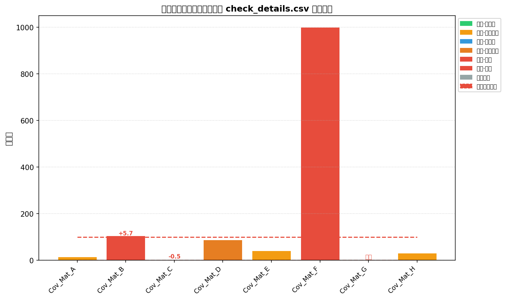
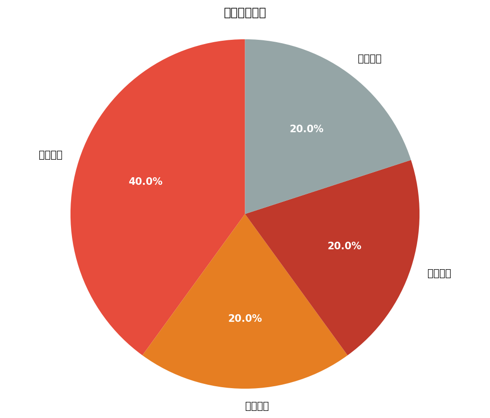
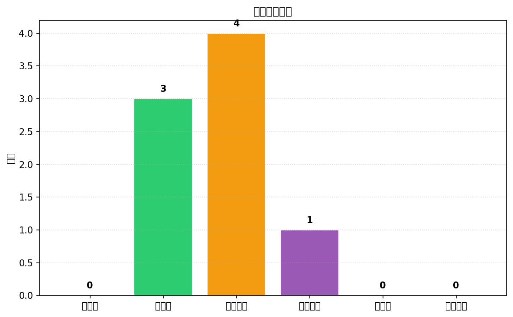
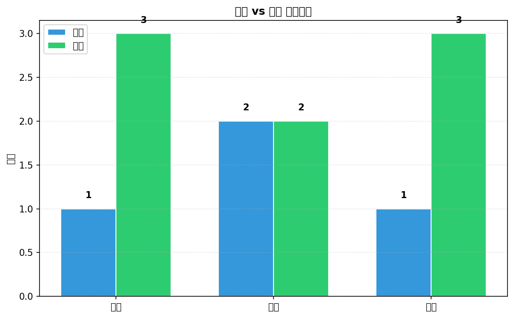

check_details.csv、violations.csv、timeline.* 使用同一组 CheckResult 数据源渲染，确保图表和明细同一口径。
图片文件：chart_condition_numbers.png

图片文件：chart_violation_distribution.png

图片文件：chart_status_distribution.png

图片文件：chart_extrap_vs_interp.png
| 矩阵 | 来源行 | 条件数 | 区间 | 外推 | 是否通过 | 处理状态 |
|---|---|---|---|---|---|---|
| Cov_Mat_A | sample_draft.csv L2 | 15.3 | [1.0, 100.0] | 否 | ✅ 通过 | 已处理 |
| Cov_Mat_B | sample_draft.csv L3 | 105.7 | [1.0, 100.0] | 是 | ❌ 未通过 | 待补材料 |
| Cov_Mat_C | sample_draft.csv L4 | 0.5 | [1.0, 100.0] | 否 | ❌ 未通过 | 待补材料 |
| Cov_Mat_D | sample_draft.csv L5 | 88.2 | [1.0, 100.0] | 是 | ✅ 通过 | 待补材料 |
| Cov_Mat_E | sample_draft.csv L6 | 42.0 | [1.0, 100.0] | 否 | ✅ 通过 | 已处理 |
| Cov_Mat_F | sample_draft.csv L7 | 999.9 | [1.0, 100.0] | 是 | ❌ 未通过 | 人工改判 |
| Cov_Mat_G | sample_draft.csv L8 | None | [1.0, 100.0] | 否 | ❌ 未通过 | 待补材料 |
| Cov_Mat_H | sample_draft.csv L9 | 30.5 | [1.0, 100.0] | 否 | ✅ 通过 | 已处理 |
| 违规ID | 矩阵 | 类型 | 严重程度 | 来源行 | 描述 |
|---|---|---|---|---|---|
| V0001_Cov_Mat_B | Cov_Mat_B | 外推越界 | critical | sample_draft.csv L3 | 外推时越界：高于上界 100.0，差值 5.7（条件数=105.7，区间[1.0, 100.0]） |
| V0002_Cov_Mat_C | Cov_Mat_C | 内插越界 | high | sample_draft.csv L4 | 内插时越界：低于下界 1.0，差值 0.5（条件数=0.5，区间[1.0, 100.0]） |
| V0003_Cov_Mat_D | Cov_Mat_D | 外推临界 | low | sample_draft.csv L5 | 外推临界：在边界内（条件数=88.2，接近边界） |
| V0004_Cov_Mat_F | Cov_Mat_F | 外推越界 | critical | sample_draft.csv L7 | 外推时越界：高于上界 100.0，差值 899.9（条件数=999.9，区间[1.0, 100.0]） |
| V0005_Cov_Mat_G | Cov_Mat_G | 数值无效 | high | sample_draft.csv L8 | 条件数值无效（NaN/Inf/缺失） |
本页由 matrix_cond_check 自动生成。